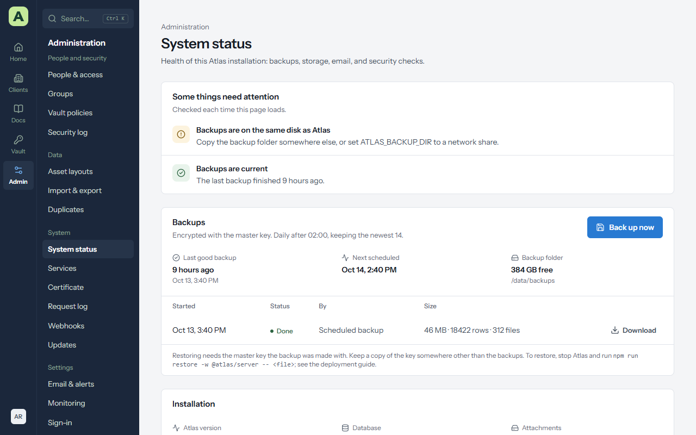
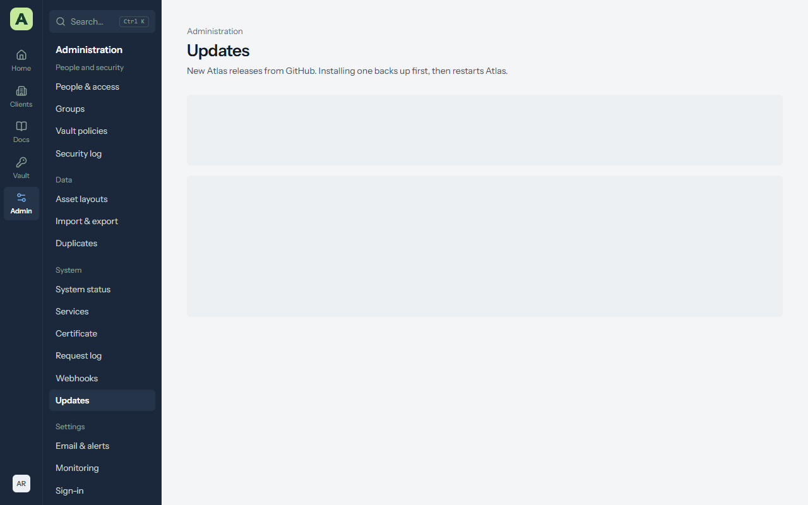
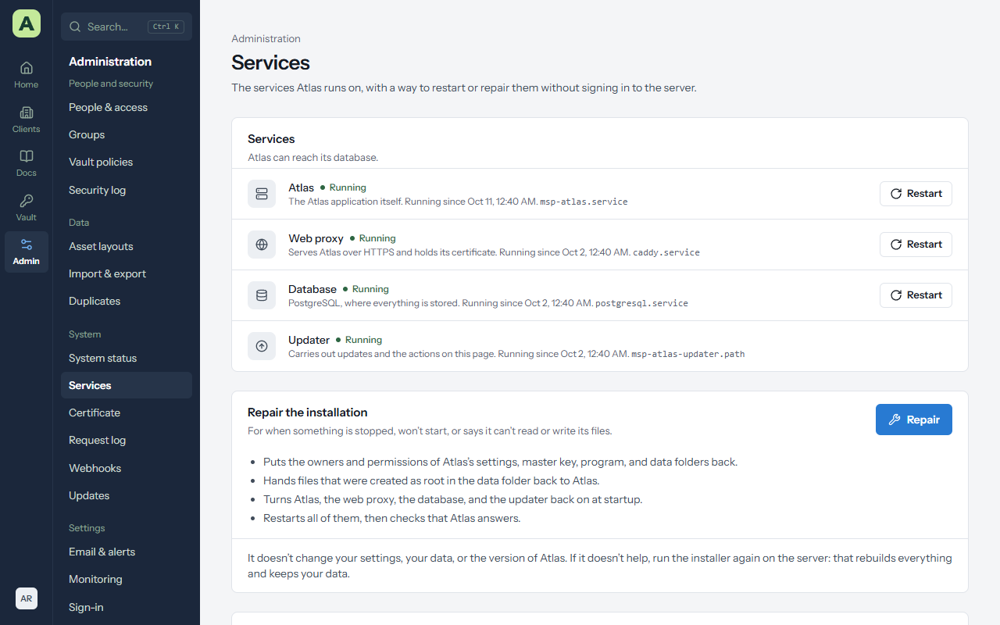
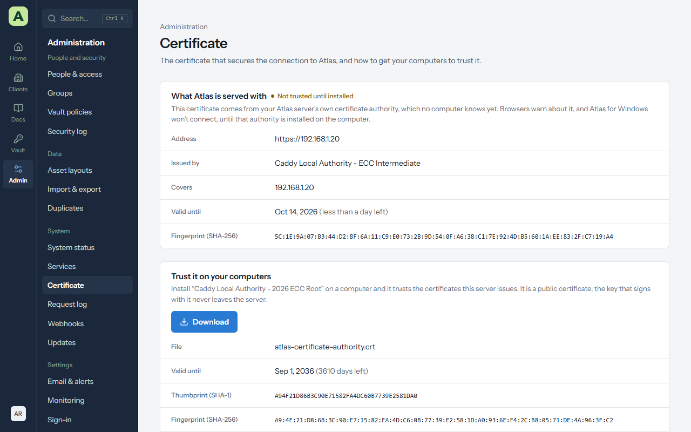

Chapter 13
Keeping Atlas healthy
A few minutes a week keeps Atlas safe. This chapter covers what to check and what to do when something needs attention.
System status


Open Admin → System status every week or so. It lists anything that needs attention, and shows:
- Backups: the last good backup, the next one, and the history. A red row means the last backup failed, with the reason.
- Disk space for the data and backup folders.
- Email, and the master key in use, including whether an old key is still loaded after a rotation.
Then open Security log and choose Verify now to check that no event has been changed or removed.
Backups
Atlas backs itself up every night into one encrypted .atlasbak file holding the whole database
and every attachment, and keeps the newest 14.
- Back up now on System status makes one on demand. Download saves a copy; Atlas asks for your password first.
- Backups are encrypted with a key derived from the master key. Without it, a backup can't be read.
-
System status warns while backups sit on the same disk as Atlas. Point
ATLAS_BACKUP_DIRat a network share, or copy the folder off the server on a schedule.
Restore a backup
- Stop Atlas.
- Make sure the master key the backup was made with is loaded.
-
Run the restore against a new, empty database, or add
--replaceto overwrite the current one:
npm run backup -w @atlas/server -- verify <file.atlasbak>
npm run restore -w @atlas/server -- <file.atlasbak>- Start Atlas. Everyone signs in again.
The restore checks the whole file before it changes anything. A backup from an older version is upgraded as it loads, and Verify now still passes afterwards.
Updates


Admin → Updates lists the published releases newer than yours, with their release notes. On servers set up with the Linux installer, an administrator can install one from the page: Atlas asks for your password, takes a backup, installs the release, and puts the previous version back if the install fails. Database changes are not rolled back; the pre-update backup covers that.
Docker and Windows installs see the page read-only, and update the way they were installed. See Installing Atlas.
Services


Admin → Services shows Atlas, the web proxy, the database and the updater, whether each is running, and since when. It works on servers set up with the Linux installer.
- Restart one service. Restarting Atlas takes a few seconds and signs nobody out. Restarting the web proxy drops connections for a moment. Restarting the database restarts Atlas with it.
- Repair is for when something won't start, or can't read or write its files. It puts the owners and permissions of Atlas's settings, master key, program and data folders back as the installer set them, turns the services back on at startup, restarts them, and checks that Atlas answers. It doesn't change your settings, data or version.
Every action asks for your password and is written to the security log. If Atlas itself is down, run
sudo systemctl restart msp-atlas on the server, and
sudo journalctl -u msp-atlas -n 50 to see why it stopped.
Remote access
Admin → Remote access chooses how people reach Atlas: from this server directly, through a Cloudflare Tunnel, through Tailscale (your tailnet, or the internet with Funnel), or behind your own reverse proxy. The page lists what to set up first for each, such as the tunnel's public hostname or turning on HTTPS certificates in Tailscale.
- Choose the way, and fill in the address and the token, auth key or proxy addresses it asks for.
- Choose Review the change. The dialog lists what moves with the address.
- Choose Change it. Atlas restarts on the new address; open it there.
Only the owner can change it, after confirming their password. If Atlas doesn't answer at the new address, the server puts the previous settings back.
The certificate


Admin → Certificate shows the certificate Atlas is served with, checked the way a visitor's computer sees it.
- Trusted everywhere: a public authority issued it, because Atlas has a public DNS name. Nothing to do.
- Not trusted until installed: Atlas was installed at an IP address or a one-word name, so the web proxy is its own certificate authority. The connection is encrypted, but browsers warn and Atlas for Windows refuses to connect until that authority is installed on the computer.
To install the authority:
- Choose Download. It's a public certificate, not a key.
- Check its thumbprint against the one on the page, with the PowerShell command the page gives.
- Install it for the whole computer (as an administrator) or for yourself, with the commands on the page, or push it with Group Policy.
- Open Atlas at the address on the certificate. A certificate for an IP address doesn't cover a name that points to the same server.